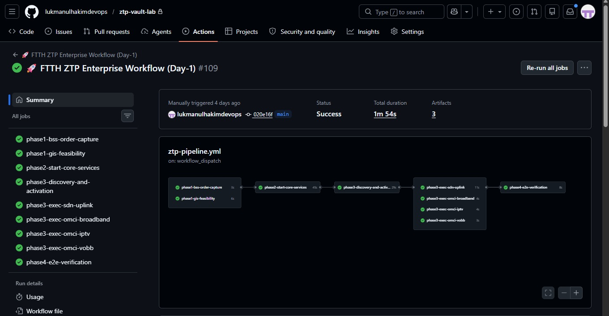

Bogor Regency, West Java, Indonesia · Independent Solutions Architect
Lukmanul Hakim
Principal Solutions Architect & Cloud Modernization Strategist
I am a Solutions Architect Consultant with 9+ years of hands-on telecom, DevOps, and multi-cloud delivery across a 15-year technology career span (since 2011, including my Bachelor of Economics (S.E.) in Operational Management study from March 2016 to October 2018). My work sits across the boundary where physical infrastructure constraints meet distributed cloud platforms: from Layer 1 copper-to-FTTH commissioning and bare-metal Proxmox PostgreSQL HA to Layer 7 Kubernetes, Terraform IaC, pull-based GitOps, and regulated DevSecOps.
Today I run an Independent Technical Advisory Practice, including on-demand, NDA-governed Subject Matter Expert consultations via global expert networks (such as VisasQ / Coleman Research). I help institutional investors and engineering leaders run technical due diligence, assess cloud modernization feasibility, and model operational risk using ISO 31000, ISO/IEC 20000, IEC 60812 (FMEA), and IEC 61025 (FTA).
15
Years Evolution
$93M
CAPEX Governed
120
K8s Microservices
* 2011-2026 career span (9+ yrs hands-on; Bachelor of Economics (S.E.) study Mar 2016-Oct 2018) · Nationwide FTTH program QA/audit scope (POCM, IDR 1.5T) · Multi-cluster GKE/Amazon EKS logistics production.
Assigned under the Directorate of Operation at PT Telkom Akses for Telkom Indonesia Group's IDR 1.5T ($93M) copper-to-FTTH program. Audited ODN optical budgets, GPON Triple-Play commissioning, Wireshark VoBB SIP captures, and GE Smallworld PNI GIS reconciliation.
Telkom Akses (POCM) · 2013 - 2014
Operational Risk & Capital Control
Formalized field fulfillment bottlenecks into quantitative Fault Tree Analysis (IEC 61025) and FMEA (IEC 60812) research during my S.E. in Operational Management, connecting engineering failure modes directly to CAPEX accuracy and ISO 31000 / ISO/IEC 20000 governance.
Universitas Mercu Buana · 2016 - Present
Layer 7 Multi-Cloud & DevSecOps
GCP Professional Cloud Architect and Microsoft Azure AI-103 certified. Delivered multi-cluster GKE/EKS orchestration, GitLab/Flux GitOps, HashiCorp Terraform multi-cloud migrations, AWS CLI + Bash + Ansible Odoo ERP automation with WHM/cPanel domain governance, dual-site bare-metal Proxmox PostgreSQL HA, and OJK-aligned controls across FinTech, logistics, and ERP.
Multi-Cloud Delivery · 2019 - Present
01 / Progressive Cloud Architecture
Building Cloud Infrastructure Progressively (5 Architecture Blueprints)
Real-world enterprise infrastructure is rarely built solo or greenfield. These five blueprints trace how a Principal Solutions Architect matures cloud platforms step by step under live team, budget, and regulatory constraints: from hybrid VPS stability (2019) and pragmatic AWS + bare-metal HA (2020) to multi-cluster Kubernetes DevSecOps (2021-2022), regulated pull-based GitOps (2022), and a clean-room autonomous reference. Each note strictly separates my direct hands-on contribution from broader team context and architectural lessons.
Stage 4 Maturity · July - September 2022 · OJK-Licensed FinTech (LPBBTI)
Regulated FinTech Lending: GitLab DevSecOps, Flux CD GitOps, Harbor/Snyk & DR Readiness
In a Principal Architect's progressive cloud journey, Stage 4 moves an organization from imperative push deployments to declarative, auditable pull-based GitOps under strict financial regulation (POJK No. 10/POJK.05/2022, POJK 4/2021, and Bank Indonesia standards). Leading a 6-person cross-functional effort over a focused 3-month engagement, I contributed to standardizing GitLab SCM and DevSecOps security pipelines (SAST, DAST, Secret Detection, Merge Request approvals), Harbor private registry and Snyk vulnerability gates, pull-based Flux CD delivery on Alibaba Cloud, RBAC and container hardening, FinTech Disaster Recovery readiness, and centralized observability across ELK Stack and OpenSearch.
Standardized GitLab CI security stages (SAST, DAST, Secret Detection, Merge Request approvals) integrated with Snyk scanning and Harbor private registry.
Embeds security checks and four-eyes governance directly inside the commit-to-artifact path before workloads ever reach a cluster.
Pull-Based GitOps Delivery
Designed pull-based GitOps workflows using Flux CD on Alibaba Cloud alongside stateless microservice decoupling.
Eliminates imperative push-CI credential sprawl and enforces Git as the single auditable source of truth for regulated releases.
Access, Telemetry & DR Readiness
Defined RBAC and container hardening baselines, centralized ELK Stack & OpenSearch telemetry, and FinTech Disaster Recovery readiness aligned with OJK & BI rules.
Aligns domestic operational sovereignty (POJK 10/2022 & POJK 4/2021) with repeatable recovery rather than ad-hoc incident response.
Principal Architect Design Principle: Domestic Sovereignty vs. Cross-Border HQ Restrictions
Why GitOps matters in regulated FinTech: Under POJK No. 10/POJK.05/2022 (effective July 2022) and POJK 4/2021, OJK-licensed entities must retain domestic control and auditability over electronic systems. Decoupling CI build/scan (GitLab + Snyk + Harbor) from in-cluster pull reconciliation (Flux CD) establishes clear segregation of duties even inside multinational structures.
Target-state evolution beyond a 3-month window: As a conceptual roadmap for organizations scaling this baseline further, next-stage hardening adds split transactional database boundaries, workload-identity auth without static keys, and periodic multi-cluster failover drills strictly inside NKRI.
Role & Collaboration Boundary (Jul - Sep 2022): Served in a 3-month FinTech architecture and DevSecOps leadership role collaborating with a 6-person cross-functional team on GitLab CI/CD security baselines, Flux CD GitOps, Harbor/Snyk integration, ELK/OpenSearch telemetry, and DR readiness. Core lending application logic, broader HQ-managed infrastructure, and post-September 2022 production operations remained under the organization's internal IT ownership.
Stage 3 Maturity · November 2021 - July 2022 · Nationwide Express Logistics
Express Logistics Platform: 120 Microservices Across GKE & Amazon EKS
Role: Container Platform & DevSecOps Consultant Window: Nov 2021 - Jul 2022 (9 mos) Scale: 120 microservices (122 API endpoints) Team Context: Dev teams + 13-person DevOps team
Stage 3 of progressive cloud architecture solves multi-cluster consistency and shift-left security at scale. Working alongside application developers and a 13-person DevOps team, I contributed to scaling container orchestration across Google Kubernetes Engine (pre-production validation) and Amazon EKS (nationwide peak production) for 120 logistics microservices. We unified delivery under Azure DevOps, Nexus Repository Manager, and Rancher, embedded SonarQube (SAST) and OWASP ZAP (DAST) security gates (eliminating 60% of critical vulnerabilities before production), tuned pod autoscaling to sustain sub-second API latency, and connected ELK + Prometheus/Grafana observability to Slack, Microsoft Teams, Pushover on-call alerts, and Microsoft App Center mobile delivery.
Collaborated across GKE (pre-production validation) and Amazon EKS (peak production) with Rancher for 120 containerized logistics microservices.
Separates staging validation from production peak load while keeping container runtime behavior portable across cloud providers.
Automated DevSecOps Gating
Integrated SonarQube (SAST) and OWASP ZAP (DAST) into centralized Azure DevOps CI/CD pipelines with Nexus Repository Manager, cutting critical pre-prod CVEs by 60%.
Turns security from a late manual sign-off into an automated quality gate enforced uniformly across all service teams.
Scaling, Observability & Mobile
Tuned pod autoscaling (HPA) and compute allocation for sub-second peak API latency; integrated ELK, Prometheus/Grafana, Slack/MS Teams, Pushover, and MS App Center.
Closes the loop between infrastructure rightsizing, real-time on-call visibility, and synchronized mobile/backend delivery.
Centralized Azure DevOps rationale: Consolidating CI/CD outside both GKE and Amazon EKS kept pipeline failures isolated from live logistics traffic and supported hosted mobile build/signing workflows into Microsoft App Center.
Sanitized PoC / Trial Scope Evaluated (NDA-safe): Separate from the production stack, participated in architectural trial/PoC evaluations across three enterprise capability tracks: (1) Enterprise APM & distributed tracing, (2) Edge CDN & perimeter caching, and (3) Privileged Access Management (PAM). Commercial terms and procurement decisions remain confidential under NDA.
Role & Collaboration Boundary (Nov 2021 - Jul 2022): Worked as a Container Platform & DevSecOps Consultant embedded with application developers and a 13-person DevOps team across the 120-microservice GKE/EKS platform, Azure DevOps security gating, HPA/compute tuning, observability alerting, and PoC evaluations through handover. Ongoing production operations and post-July 2022 platform evolution belong solely to the internal engineering team.
Stage 2 Maturity · May - October 2020 · Multi-Tenant Odoo ERP & Dual-Site F&B POS
Odoo Cloud ERP on AWS EC2 (-50% Setup Time), WHM/cPanel Domain Control & Bare-Metal Dual-Site PostgreSQL HA
Role: Cloud Automation & Infrastructure Lead Window: May 2020 - Oct 2020 (6 mos) Cloud ERP: AWS CLI + Bash + Ansible + WHM/cPanel Database HA: Proxmox VE + repmgr/Barman + BGP
Stage 2 illustrates a core Principal Architect lesson: pragmatic automation under executive constraints paired with resilient data-tier engineering. Leading an 11-person cross-functional effort, I migrated legacy Odoo ERP workloads from on-premise VPS hosts to AWS EC2 with GitHub Enterprise. When executive leadership (CEO) declined declarative Terraform adoption to stay close to familiar AWS Marketplace workflows, I automated provisioning with AWS CLI + Bash using AWS Odoo Marketplace images and EC2 Instance Snapshots (cutting client setup time by 50%), layered Ansible for Odoo code and odoo.conf configuration, operated WHM / cPanel on CentOS 7 (AWS Marketplace) for multi-tenant domain/DNS management, and scheduled PostgreSQL backups via AWS CLI cron to Amazon S3. On a parallel NDA-protected custom Odoo F&B POS track, I engineered a dual-site bare-metal Proxmox VE Enterprise PostgreSQL HA cluster across Site A and Site B over distinct ISP vendors with BGP AS failover.
Proves automation value does not wait for ideal greenfield IaC; repeatable scripting cuts toil immediately within executive constraints.
Multi-Tenant Domain & S3 Backups
Operated WHM / cPanel on CentOS 7 (AWS Marketplace) for client domain/DNS/SSL routing and scheduled ERP PostgreSQL backups via cron + AWS CLI to Amazon S3.
Standardizes client domain administration and off-host database backup durability before adopting cloud-native managed databases.
Dual-Site Bare-Metal PostgreSQL HA
Built Site A & Site B bare-metal Proxmox VE Enterprise clusters over distinct ISPs (BGP AS Failover) with repmgr (sync 0s lag), repmgrd, HAProxy 1.8 + Keepalived 1.3 VIPs, and Barman WAL/PITR.
Demonstrates ground-truth data-tier resilience across physical hypervisors, WAN routing, and synchronous failover without hiding behind managed cloud abstractions.
Principal Architect Trade-Off: Navigating Executive Constraints (Why Terraform Was Deferred)
Proposal vs. business reality: During the May-October 2020 mandate, I proposed HashiCorp Terraform for declarative cloud provisioning. The CEO declined Terraform to keep operations anchored on AWS Marketplace workflows the team already understood.
Pragmatic delivery: Rather than stalling execution, I delivered versioned AWS CLI + Bash + EC2 Snapshot automation, Ansible Odoo configuration, and WHM / cPanel (CentOS 7, AWS Marketplace) domain control, cutting onboarding setup time by 50%.
Progressive continuity: Declarative HashiCorp Terraform IaC was later delivered in production during my multi-cloud Kubernetes migration mandate at PT Meteor Inovasi Digital (Sep - Dec 2022).
Role & Collaboration Boundary (May - Oct 2020): Led cloud automation and infrastructure delivery alongside an 11-person cross-functional team for VPS-to-AWS EC2 migration, AWS CLI/Bash + Snapshot scripts, Ansible Odoo configuration, WHM/cPanel (CentOS 7 AWS Marketplace) domain control, S3 PostgreSQL backups, and the NDA-protected dual-site Proxmox Enterprise PostgreSQL HA cluster through handover. Proprietary ERP code, facility identifiers, and post-October 2020 operations remain internally owned.
Stage 1 Maturity · June - September 2019 · Regulated Multifinance (OJK)
Every progressive cloud modernization starts at Stage 1: stabilizing hybrid on-premise VPS environments, removing manual release friction, and establishing centralized visibility. During a 4-month consulting engagement for a regulated Indonesian multifinance institution under POJK No. 35/POJK.05/2018, I worked with the engineering team to optimize hybrid cloud and on-premise VPS availability, accelerate release cycles by 40% through containerized Jenkins CI integrated with Jira, Trello, Docker, and Bitbucket (including Android CI/CD), deploy a containerized ELK Stack to lower MTTR, and offload non-PII build artifacts and logs to Google Cloud Storage.
Built containerized Jenkins pipelines integrated with Jira, Trello, Docker, and Bitbucket (including Android CI/CD), accelerating release cycles by 40%.
Establishes repeatable, containerized builds before attempting larger microservices or Kubernetes transformations.
Hybrid & On-Premise VPS HA
Optimized hybrid cloud and on-premise VPS availability aligned with OJK (POJK 35/2018) domestic data center and DRC requirements.
Eliminates immediate availability bottlenecks inside legacy estates without forcing an unrealistic big-bang cloud rewrite.
ELK Telemetry & GCS Offload
Deployed a containerized ELK Stack to improve incident visibility and lower MTTR, paired with Google Cloud Storage offload for non-PII artifacts and logs.
Prevents VPS disk exhaustion while respecting 2019 Indonesian financial data residency boundaries (pre-GCP Jakarta region).
Principal Architect Design Principle: 2019 Data Residency & Incremental Modernization
Why non-PII GCS offload only (2019 context): Because Google Cloud Jakarta only launched in June 2020, cloud object storage offload during Jun-Sep 2019 had to stay strictly scoped to non-PII build artifacts and archival debris while customer financial data remained domestic under POJK 35/2018.
Progressive architecture takeaway: Containerizing CI (Jenkins + Docker) and observability (ELK) first delivers measurable speed (+40%) and MTTR gains inside a 4-month window, creating the operational maturity needed before adopting Kubernetes in later stages.
Role & Collaboration Boundary (Jun - Sep 2019): Contributed as a DevOps Infrastructure Consultant working alongside internal IT and application teams on hybrid cloud/VPS optimization, Jira/Bitbucket/Jenkins/Docker CI/CD, containerized ELK observability, and GCS non-PII offload through handover. Core lending systems, customer records, and post-September 2019 operations remain exclusively under the institution's internal ownership.
Type: Retrospective Modernization Methodology: Clean-Room (Zero Client IP) Benchmark: 1m 54s parallel DAG run Ownership: 100% Independent Reference
Stage 5 closes the cross-layer loop: taking real-world Layer 1-2 FTTH fulfillment bottlenecks and BAST compliance friction experienced in the field and re-architecting them independently from scratch using modern cloud-native automation. Demonstrates parallel DAG orchestration (1 minute 54 seconds execution benchmark) and immutable audit output generation (BAST-WorkOrder.json) with zero employer source code, schemas, or proprietary datasets.
Historical Boundary (Non-Correlation with 2013 - 2014): This is a post-engagement modernization exercise, not a system built during employment. The 2013-2014 PT Telkom Akses role had zero correlation with DevOps, GitHub Actions, or cloud-native platforms; it was strictly Layer 1-2 physical telecom operations archived below in Section 03.

Clean-room parallel DAG execution benchmark (1m 54s).Generated immutable artifact: BAST-WorkOrder.json.
Reverse-chronological record of advisory mandates, consulting engagements, full-time roles, and my 2016-2018 undergraduate operational management study.
Sep 2025 - PresentGlobal (Remote)
Independent Solutions Architect & Technical Due Diligence Advisor
Independent Practice (Global Expert Networks)
Deliver on-demand, NDA-governed technical due diligence, commercial viability, and cloud modernization consultations for institutional investors and enterprise teams (including ad-hoc SME sessions via global expert networks such as VisasQ / Coleman Research, operating independently outside their corporate structure). Evaluate multi-cloud migration readiness (AWS, GCP, Azure), FTTH/GPON infrastructure acquisitions, and multi-environment Service Assurance using ISO 31000, ISO/IEC 20000, IEC 60812 (FMEA), and IEC 61025 (FTA), alongside FinOps cost governance and SPOF mitigation.
Focus: Technical Due Diligence, ISO 31000, ISO/IEC 20000, IEC 60812 FMEA, IEC 61025 FTA, AWS, GCP, Azure, FinOps, FTTH/GPON.
Jan 2023 - Feb 2025Jakarta, Indonesia
Enterprise IT Advisory Consultant
PT Altha Dyanusa Consulting
Designed enterprise multi-cloud blueprints and ISO 31000-aligned IT risk governance frameworks for clients modernizing monolithic core systems into cloud-native platforms. Advised engineering leadership on controlled, low-downtime migration pathways, container security baselines, and standardized hybrid DevSecOps compliance policies. (Advisory stewardship; ongoing execution and IP remained with client teams.)
Led hands-on legacy virtual machine containerization and multi-cloud infrastructure engineering across AWS, Google Cloud Platform, and Alibaba Cloud during a 4-month interim mandate. Built HashiCorp Terraform IaC baselines, reusable CI/CD templates, and structured technical handover documentation through December 2022.
Collaborated with a 6-person cross-functional team to standardize GitLab SCM and DevSecOps CI pipelines (SAST, DAST, Secret Detection, Merge Request approvals) feeding Snyk and Harbor private registry controls into pull-based Flux CD GitOps on Alibaba Cloud. Defined container hardening, RBAC, FinTech Disaster Recovery readiness, and centralized ELK Stack / OpenSearch observability aligned with OJK (POJK 10/POJK.05/2022 & POJK 4/POJK.05/2021) and Bank Indonesia governance through handover.
Collaborated with application developers and a 13-person DevOps team to scale multi-cluster Kubernetes orchestration across GKE (pre-production validation) and Amazon EKS (peak production) for 120 logistics microservices. Integrated centralized Azure DevOps CI/CD security gates (with Nexus and Rancher) using SonarQube (SAST) and OWASP ZAP (DAST), eliminating 60% of critical vulnerabilities prior to production. Tuned pod autoscaling and compute allocation alongside ELK, Prometheus/Grafana, Slack/MS Teams, Pushover alerting, and MS App Center to sustain sub-second API latency through handover.
Migrated legacy Odoo ERP workloads from on-premise VPS environments to AWS EC2 using GitHub Enterprise for versioned source control. Automated cloud provisioning via AWS CLI and Bash scripts built on AWS Odoo Marketplace images and EC2 Instance Snapshots (cutting client environment setup time by 50%), paired with Ansible playbooks for Odoo code deployment and odoo.conf configuration, WHM / cPanel on CentOS 7 (AWS Marketplace) for multi-tenant domain & DNS management, and scheduled PostgreSQL backups via AWS CLI cron to Amazon S3. (Proposed HashiCorp Terraform IaC standardization, which was deferred by executive leadership in favor of AWS Marketplace tooling.) Also architected a dual-site PostgreSQL High Availability cluster for an NDA-protected custom Odoo F&B POS deployment across geographically separated Data Centers (Site A and Site B) on bare-metal Proxmox VE Enterprise over distinct ISP vendors with BGP AS failover, using repmgr synchronous streaming replication, repmgrd auto-failover, HAProxy/Keepalived VIP pairs, and Barman WAL backup & PITR.
Optimized hybrid cloud and on-premise VPS high-availability infrastructure aligned with OJK (POJK 35/2018) domestic DC/DRC requirements. Accelerated release cycles by 40% using containerized Jenkins CI pipelines integrated with Jira, Trello, Docker, and Bitbucket (including Android CI/CD) with non-PII artifact offload to Google Cloud Storage. Deployed a containerized ELK Stack (Elasticsearch, Logstash, Kibana) to improve incident visibility and lower MTTR through handover.
Bachelor of Economics (S.E.) in Operational Management
Universitas Mercu Buana · GPA: 3.17 / 4.00
Completed undergraduate degree while formalizing empirical Layer 1/Layer 2 telecom field experience into quantitative operational risk research. Authored my undergraduate thesis applying Fault Tree Analysis (IEC 61025) and Failure Mode and Effects Analysis (IEC 60812) to FTTH Triple-Play (IndiHome) fulfillment system testing, forming the quantitative risk methodology later applied across multi-cloud and advisory engagements.
Optimized MPLS core backbone performance for Tier-1 banking clients using SolarWinds telemetry, resolving latency bottlenecks and transient packet loss across payment clearing and interbank settlement links.
Project Officer of Construction Management | FTTH Commissioning & OSS/BSS | Directorate of Operation
PT Telkom Akses (Telkom Indonesia Group)
Official employment certificate (paklaring) code: POCM. Governed field quality compliance audits, ODN optical budget verification (≤ -24 dBm), and service fulfillment testing for the nationwide copper-to-FTTH rollout (IDR 1.5T / ~$93M CAPEX program scope). Led joint GPON commissioning and Triple-Play (HSI, VoBB/VoIP, IPTV) acceptance testing with OEM vendors (T-CONT DBA profiles, GEM ports, 802.1Q/Q-in-Q VLAN segregation, IGMP multicast) and ran Wireshark DPI on VoBB SIP (RFC 3261), RTP jitter, and G.711 codecs. Contributed to IndiHome FTTH Pilot SOPs (OMCI/TR-069) and built RHEL 6 ETL reconciliation scripts (Oracle, PostgreSQL, SOAP XML) synchronizing GE Smallworld PNI (GIS) physical records (Datek) with I-Sisca/TenOSS (Dalay). Conducted structured field Root Cause Analysis (RCA) on fulfillment bottlenecks (later formalized via IEC 61025 FTA and IEC 60812 FMEA in my 2018 S.E. thesis), driving a 20% trial defect reduction with zero capital asset discrepancy. (Standalone L1/L2 telecom scope; non-DevOps / non-cloud-native.)
Secured Point of Sale (POS) and electronic ticketing networks with MikroTik firewalls, automated daily transactional data synchronization using Bash and PowerShell scripting, and administered Windows Server and CCTV telemetry within an IDR 200M infrastructure upgrade.
Resolved enterprise network and fiber infrastructure incidents and SLA escalations, coordinating cross-functional root cause analysis (RCA) and ticket resolution via enterprise CRM platforms.
FTTH Field Audit & Smallworld PNI GIS Reconciliation
Archival record of my 2013-2014 Layer 1-2 physical plant governance at PT Telkom Akses (POCM under Directorate of Operation). Kept strictly distinct from modern DevOps and cloud engagements.
High trial integration fallout risking invalid BAST sign-offs and billing revenue leakage across IDR 1.5T program scope.
Structured field RCA (later formalized via IEC 61025 FTA & IEC 60812 FMEA in 2018 S.E. thesis) drove -20% trial defects and valid BAST handovers.
How Layer 1 Physical Plant Discipline Informs My Layer 7 Cloud Mental Models
These are conceptual cross-domain analogies connecting two separate eras of my career (2013-2014 physical telecom operations vs. 2019-2026 cloud-native delivery), not a shared runtime:
Principle
Layer 1 Physical Plant (2013 - 2014)
Layer 7 Cloud-Native (2019 - 2026)
Identification
Every optical port and access bearer requires a verified GIS coordinate ID before BAST handover.
Every cloud asset and pod carries mandatory metadata tags (TenantID, Owner, CostCenter) enforced in CI.
Resilience
Catching optical attenuation (> -24 dBm) and SIP jitter early before customer-facing link fracture.
Kubernetes health probes, pod autoscaling (HPA), and repmgrd / Barman PostgreSQL HA.
Capital Efficiency
Optimizing optical routes and T-CONT DBA profiles to protect physical CAPEX.
Pod autoscaling, compute rightsizing, and FinOps cost governance to curb cloud waste.
Access Control
Physical ODC hardening and strict 802.1Q/Q-in-Q VLAN segregation.
Least-privilege IAM, role-based access control (RBAC), and automated SAST/DAST CI gates.
Evolution Diagram - Legacy Monolith Modernization RoadmapL1 TO L7 PERSPECTIVE
04 / Capabilities & Credentials
Technical Scope, Certifications & Education
Core capabilities practiced across production delivery, paired with vendor-verified exam certifications, separate training certificates and lab badges, and a curated skill wallet.
Microsoft Azure · Azure AI · Artificial Intelligence (AI) · Generative AI · AI Agents · Application Development · Python · Computer Vision & Machine Vision (MV) · Data & Information Extraction · Text Analysis
8. Governance & Advisory
OJK (POJK 10/2022, 4/2021, 35/2018) & Bank Indonesia Compliance · FinOps Cost Governance · M&A Technical Due Diligence · Capital Governance
9. Telecom & Bare-Metal
GE Smallworld PNI (GIS) · GPON Commissioning · Triple-Play Fulfillment · Wireshark DPI · VoBB SIP (RFC 3261) · MPLS · Proxmox VE Enterprise · BGP AS Failover
Verified Certifications
Proctored vendor certification exams with verbatim badge metadata, skill tags, and public verification links.
Certification · Associate
Microsoft Certified: Azure AI Apps and Agents Developer Associate (AI-103)
Microsoft Azure · Earned Sep 15, 2026 · Expires Sep 15, 2027 ID: MS1100623380 · Direct verification via Microsoft Learn
Badge Skills: AI Agents, Application Development, Artificial Intelligence (AI), Azure AI, Computer Vision, Data Extraction, Generative AI, Information Extraction, Machine Vision (MV), Microsoft Azure, Python, Technical Information, Text Analysis
AWS Cloud Quest: Cloud Practitioner - Training Badge
Issued by Amazon Web Services Training and Certification All Solution Building Assignments · Cloud Practitioner Role (Compute, Networking, Database & Security)
Official Verbatim Skill Wallet Summary (Credly & Microsoft Learn Criteria)
Verbatim skill taxonomies and exam criteria published on my verified Credly and Microsoft Learn records, explicitly separated from production delivery scopes documented in Experience.
Google Cloud PCA (Advanced)
Design, develop, and manage robust, secure, scalable, highly available Google Cloud solutions. Skills: Cloud Architecture, Cloud Computing, Cloud Security, Cloud Storage, Databases, GKE, Google Cloud Platform (GCP), Identity And Access Management (IAM), Networking, Scalability, Workload Migration.
Google Cloud ACE (Intermediate)
Deploy applications, monitor operations, and manage enterprise solutions via Google Cloud Console and CLI. Skills: Cloud Architecture, Cloud Computing, Cloud Security, Cloud Storage, Compute Engine, GKE, Google Cloud Platform (GCP), Identity And Access Management (IAM), Infrastructure as Code (IaC), Networking, Pub/Sub, SQL.
Microsoft Azure AI-103 (Valid thru Sep 15, 2027)
Verified directly via Microsoft Learn credential link. Skills: AI Agents, Application Development, Artificial Intelligence (AI), Azure AI, Computer Vision, Data Extraction, Generative AI, Information Extraction, Machine Vision (MV), Microsoft Azure, Python, Technical Information, Text Analysis.
AWS Certified Cloud Practitioner (Foundational)
Demonstrated cloud fluency and foundational AWS service architecture knowledge. Skills: AWS, AWS Certification, AWS Cloud, Amazon Web Services, Cloud Certification, Cloud Computing, Cloud Platform, Cloud Services.
Completed CyberOps Associate course with up to 30 hours of 52 hands-on labs (Security Onion - ELK and/or Cisco Packet Tracer) and comprehensive exam. Skills: Attack Methods, Computer Forensics, Cryptography, Cybersecurity, Data And Event Analysis, Endpoint Threat Analysis, Host-based Analysis, Incident Response, Malware Analysis, Network Attacks, Network Intrusion Analysis SecOps, SOC Metrics, Security Concepts, Security Monitoring, Security Policy, Security Procedures, Threat Detection.
AWS Cloud Quest: Generative AI Practitioner (Learning · Foundational)
Completed all solution building assignments for the Foundational Generative AI role in AWS Cloud Quest (prompt engineering, code generation, chatbot development, content moderation, and model fine-tuning). Skills: AI, AWS, AWS Cloud, Amazon Web Services (AWS), Generative AI, Machine Learning (ML), Prompt Engineering.
AWS Cloud Quest: Cloud Practitioner (Learning)
Completed all solution building assignments for the Cloud Practitioner role in AWS Cloud Quest with hands-on compute, networking, database, and security services. Skills: AWS, AWS Cloud, AWS Cloud Computing, AWS Cloud Foundations, Amazon Web Services (AWS), Cloud Platform.
Education
Mar 2016 - Oct 2018Jakarta, Indonesia
Bachelor of Economics (S.E.) - Operational Management
Universitas Mercu Buana · GPA: 3.17 / 4.00
Undergraduate Thesis:Hakim, L. (2018). Operational Risk Analysis Using Fault Tree Analysis and Failure Mode and Effect Analysis in the Process Testing of the FTTH Triple Play (IndiHome) Fulfillment System.